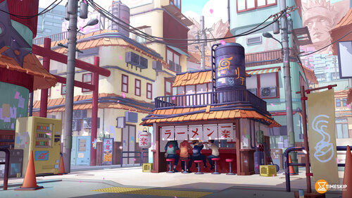

Ichiraku Ramen is a renowned ramen shop in the world of Naruto. Located in the Hidden Leaf Village, this humble establishment is known for serving delicious and comforting bowls of ramen to both locals and shinobi alike. The shop is a favorite spot for the main characters of the anime, Naruto and his friends, who often gather there to enjoy a warm and satisfying meal.
This website showcasing Ichiraku Ramen is proudly developed by Goutham, a passionate fan of Naruto and a web developer. With a deep appreciation for the anime series and its iconic ramen shop, Goutham created this website to share the love for Ichiraku Ramen and provide fans with a glimpse into the world of Naruto's favorite eatery.
home